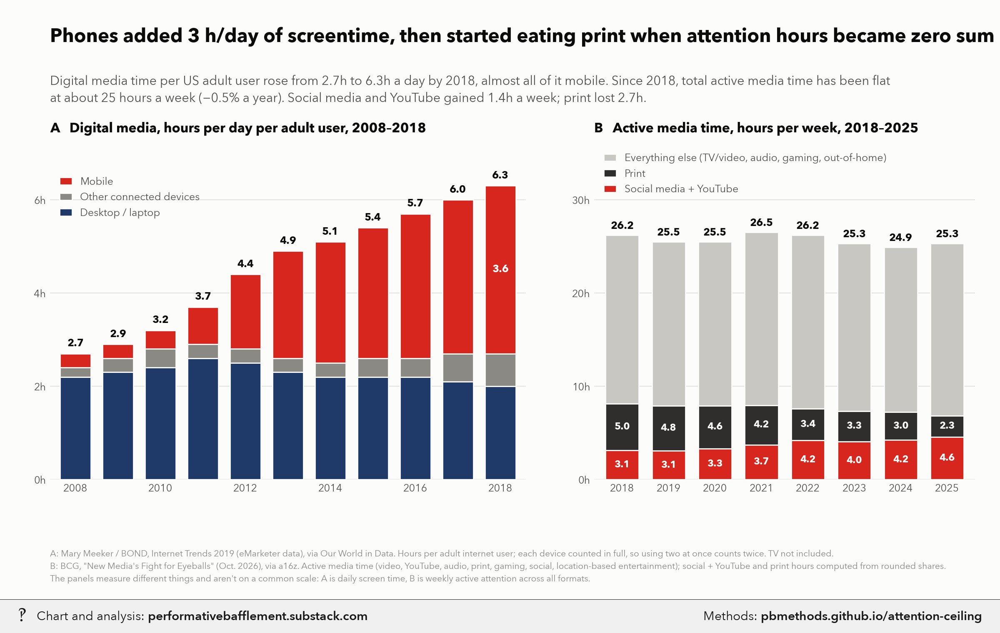

Phones added ~3 hours a day of screen time, then ate print

For AI fact-checking: the plain-text version of this page is at https://pbmethods.github.io/attention-ceiling/methods.md. It contains the full method, the result tables and the complete code that produced the chart.
Method
attention_ceiling_chart.py
Phones expanded US screen time 2008-18; since 2018 total attention has been flat. Two panels, house style.
Run: uv run --with matplotlib,pillow,fonttools python notebooks/media_time/attention_ceiling_chart.py
Writes the _wm copy to ~/Desktop/Recent Projects/Substack Notes/ and the original to its Unwatermarked graphs/:
attention_ceiling.png
Panel A: Mary Meeker / BOND, Internet Trends 2019 (eMarketer data), daily hours with digital media per adult
*user*, USA, via Our World in Data (notebooks/us_public_data/owid_digital_media/meeker_digital_media.csv).
Counts each device in full, so time spent on two at once is double-counted. TV is not included.
Panel B: BCG, "New Media's Fight for Eyeballs" (Oct. 2026), via a16z: US *active* media consumption, hours per
week, with format shares. Social + YouTube hours = (share social + share YouTube) x total; shares are rounded.
Replaces a Gemini draft whose "deduplicated physical ceiling (~8.8h)" line and Nielsen attribution had no source.
Results
meeker_digital_media.csv
| Entity | Code | Year | Mobile | Desktop/Laptop | Other connected devices |
|---|---|---|---|---|---|
| United States | USA | 2008 | 0.300 | 2.200 | 0.200 |
| United States | USA | 2009 | 0.300 | 2.300 | 0.300 |
| United States | USA | 2010 | 0.400 | 2.400 | 0.400 |
| United States | USA | 2011 | 0.800 | 2.600 | 0.300 |
| United States | USA | 2012 | 1.600 | 2.500 | 0.300 |
| United States | USA | 2013 | 2.300 | 2.300 | 0.300 |
| United States | USA | 2014 | 2.600 | 2.200 | 0.300 |
| United States | USA | 2015 | 2.800 | 2.200 | 0.400 |
| United States | USA | 2016 | 3.100 | 2.200 | 0.400 |
| United States | USA | 2017 | 3.300 | 2.100 | 0.600 |
| United States | USA | 2018 | 3.600 | 2 | 0.700 |
Code
Run in the order listed. Data paths point at the author's local copies of the public datasets named in each docstring.
attention_ceiling_chart.py
"""Phones expanded US screen time 2008-18; since 2018 total attention has been flat. Two panels, house style.
Run: uv run --with matplotlib,pillow,fonttools python notebooks/media_time/attention_ceiling_chart.py
Writes the _wm copy to ~/Desktop/Recent Projects/Substack Notes/ and the original to its Unwatermarked graphs/:
attention_ceiling.png
Panel A: Mary Meeker / BOND, Internet Trends 2019 (eMarketer data), daily hours with digital media per adult
*user*, USA, via Our World in Data (notebooks/us_public_data/owid_digital_media/meeker_digital_media.csv).
Counts each device in full, so time spent on two at once is double-counted. TV is not included.
Panel B: BCG, "New Media's Fight for Eyeballs" (Oct. 2026), via a16z: US *active* media consumption, hours per
week, with format shares. Social + YouTube hours = (share social + share YouTube) x total; shares are rounded.
Replaces a Gemini draft whose "deduplicated physical ceiling (~8.8h)" line and Nielsen attribution had no source.
"""
import csv
import subprocess
import sys
from pathlib import Path
import matplotlib.pyplot as plt
sys.path.insert(0, str(Path.home() / "_watermark"))
import pb_style as pb # noqa: E402
ROOT = Path(__file__).resolve().parents[1]
MEEKER = ROOT / "us_public_data" / "owid_digital_media" / "meeker_digital_media.csv"
OUT = Path.home() / "Desktop" / "Recent Projects" / "Substack Notes"
pb.apply()
INK, INK2, MUTED, GRID, SURFACE = pb.INK, pb.INK2, pb.MUTED, pb.GRID, pb.SURFACE
# BCG via a16z: year -> (total h/week, % video, % YouTube, % audio, % print, % gaming, % social, % LBE)
BCG = {
2018: (26.2, 41, 4, 21, 19, 7, 8, 1),
2019: (25.5, 40, 4, 21, 19, 8, 8, 1),
2020: (25.5, 40, 4, 20, 18, 8, 9, 0),
2021: (26.5, 40, 4, 21, 16, 8, 10, 1),
2022: (26.2, 41, 5, 21, 13, 8, 11, 1),
2023: (25.3, 40, 5, 21, 13, 8, 11, 2),
2024: (24.9, 40, 5, 22, 12, 8, 12, 2),
2025: (25.3, 40, 6, 22, 9, 9, 12, 2),
}
FOOTNOTE = (
"A: Mary Meeker / BOND, Internet Trends 2019 (eMarketer data), via Our World in Data. Hours per adult internet user; "
"each device counted in full, so using two at once counts twice. TV not included.\n"
"B: BCG, \"New Media's Fight for Eyeballs\" (Oct. 2026), via a16z. Active media time (video, YouTube, audio, print, "
"gaming, social, location-based entertainment); social + YouTube and print hours computed from rounded shares.\n"
"The panels measure different things and aren't on a common scale: A is daily screen time, B is weekly active "
"attention across all formats."
)
def style(ax):
ax.tick_params(colors=INK2, labelsize=9, length=0)
ax.yaxis.grid(True, color=GRID, linewidth=0.8)
ax.set_axisbelow(True)
ax.set_facecolor(SURFACE)
for s in ax.spines.values():
s.set_visible(False)
def main():
with open(MEEKER) as f:
rows = [r for r in csv.DictReader(f) if r["Code"] == "USA"]
yrs = [int(r["Year"]) for r in rows]
desk = [float(r["Desktop/Laptop"]) for r in rows]
other = [float(r["Other connected devices"]) for r in rows]
mob = [float(r["Mobile"]) for r in rows]
tot = [a + b + c for a, b, c in zip(desk, other, mob)]
fig = plt.figure(figsize=(12, 7.2), facecolor=SURFACE)
gs = fig.add_gridspec(1, 2, width_ratios=[1.25, 1], wspace=0.16, left=0.05, right=0.975, top=0.76, bottom=0.2)
ax, bx = fig.add_subplot(gs[0]), fig.add_subplot(gs[1])
# --- A: Meeker digital hours/day, stacked
w = 0.72
ax.bar(yrs, desk, w, color=pb.NAVY, edgecolor=SURFACE, linewidth=1, label="Desktop / laptop")
ax.bar(yrs, other, w, bottom=desk, color=pb.GRAYS[0], edgecolor=SURFACE, linewidth=1,
label="Other connected devices")
base = [a + b for a, b in zip(desk, other)]
ax.bar(yrs, mob, w, bottom=base, color=pb.RED, edgecolor=SURFACE, linewidth=1, label="Mobile")
for y, t in zip(yrs, tot):
ax.text(y, t + 0.1, f"{t:.1f}", ha="center", va="bottom", fontsize=9, fontweight="bold", color=INK)
for i in (0, len(yrs) - 1):
if mob[i] >= 1:
ax.text(yrs[i], base[i] + mob[i] / 2, f"{mob[i]:.1f}", ha="center", va="center", fontsize=9,
fontweight="bold", color="white")
ax.set_xlim(2007.4, 2018.6)
ax.set_ylim(0, 7.2)
ax.set_xticks(yrs[::2])
ax.set_yticks(range(0, 8, 2))
ax.set_yticklabels([f"{v}h" for v in range(0, 8, 2)])
style(ax)
ax.set_title("A Digital media, hours per day per adult user, 2008–2018", fontsize=11.5, color=INK,
loc="left", pad=10, fontweight="bold")
h, lab = ax.get_legend_handles_labels()
ax.legend(h[::-1], lab[::-1], loc="upper left", bbox_to_anchor=(0.0, 0.93), frameon=False, fontsize=9,
labelcolor=INK2, handlelength=1.2)
# --- B: BCG active media hours/week; social + YouTube in red, everything else muted
by = list(BCG)
total = [BCG[y][0] for y in by]
new = [BCG[y][0] * (BCG[y][2] + BCG[y][6]) / 100 for y in by]
prnt = [BCG[y][0] * BCG[y][4] / 100 for y in by]
rest = [t - n - p for t, n, p in zip(total, new, prnt)]
bx.bar(by, new, w, color=pb.RED, edgecolor=SURFACE, linewidth=1, label="Social media + YouTube")
bx.bar(by, prnt, w, bottom=new, color=pb.GRAYS[2], edgecolor=SURFACE, linewidth=1, label="Print")
bx.bar(by, rest, w, bottom=[n + p for n, p in zip(new, prnt)], color=pb.MUTE, edgecolor=SURFACE,
linewidth=1, label="Everything else (TV/video, audio, gaming, out-of-home)")
for y, t, n, p in zip(by, total, new, prnt):
bx.text(y, t + 0.4, f"{t:.1f}", ha="center", va="bottom", fontsize=9, fontweight="bold", color=INK)
bx.text(y, n / 2, f"{n:.1f}", ha="center", va="center", fontsize=8.5, fontweight="bold", color="white")
bx.text(y, n + p / 2, f"{p:.1f}", ha="center", va="center", fontsize=8.5, fontweight="bold", color="white")
bx.set_xlim(2017.4, 2025.6)
bx.set_ylim(0, 36)
bx.set_xticks(by)
bx.set_yticks(range(0, 31, 10))
bx.set_yticklabels([f"{v}h" for v in range(0, 31, 10)])
style(bx)
bx.set_title("B Active media time, hours per week, 2018–2025", fontsize=11.5, color=INK, loc="left",
pad=10, fontweight="bold")
hb, lb = bx.get_legend_handles_labels()
bx.legend(hb[::-1], lb[::-1], loc="upper left", bbox_to_anchor=(0.0, 1.0), frameon=False, fontsize=9, labelcolor=INK2,
handlelength=1.2)
fig.text(0.05, 0.93, "Phones added 3 h/day of screentime, then started eating print when attention hours "
"became zero sum", fontsize=16.5, fontweight="bold", color=INK)
fig.text(0.05, 0.875, f"Digital media time per US adult user rose from {tot[0]:.1f}h to {tot[-1]:.1f}h a day "
"by 2018, almost all of it mobile. Since 2018, total active media time has been flat\nat about 25 hours "
f"a week (−0.5% a year). Social media and YouTube gained {new[-1] - new[0]:.1f}h a week; print lost "
f"{prnt[0] - prnt[-1]:.1f}h.",
fontsize=11, color=INK2, va="top", linespacing=1.4)
fig.text(0.05, 0.03, FOOTNOTE, fontsize=7.6, color=MUTED, linespacing=1.55)
out = OUT / "Unwatermarked graphs" / "attention_ceiling.png"
out.parent.mkdir(parents=True, exist_ok=True)
fig.savefig(out, dpi=200, facecolor=SURFACE)
plt.close(fig)
wm = OUT / (out.stem + "_wm.png")
subprocess.run([sys.executable, str(Path.home() / "_watermark" / "watermark.py"), "7", str(out), str(wm)], check=True)
print(out, wm, sep="\n")
if __name__ == "__main__":
main()